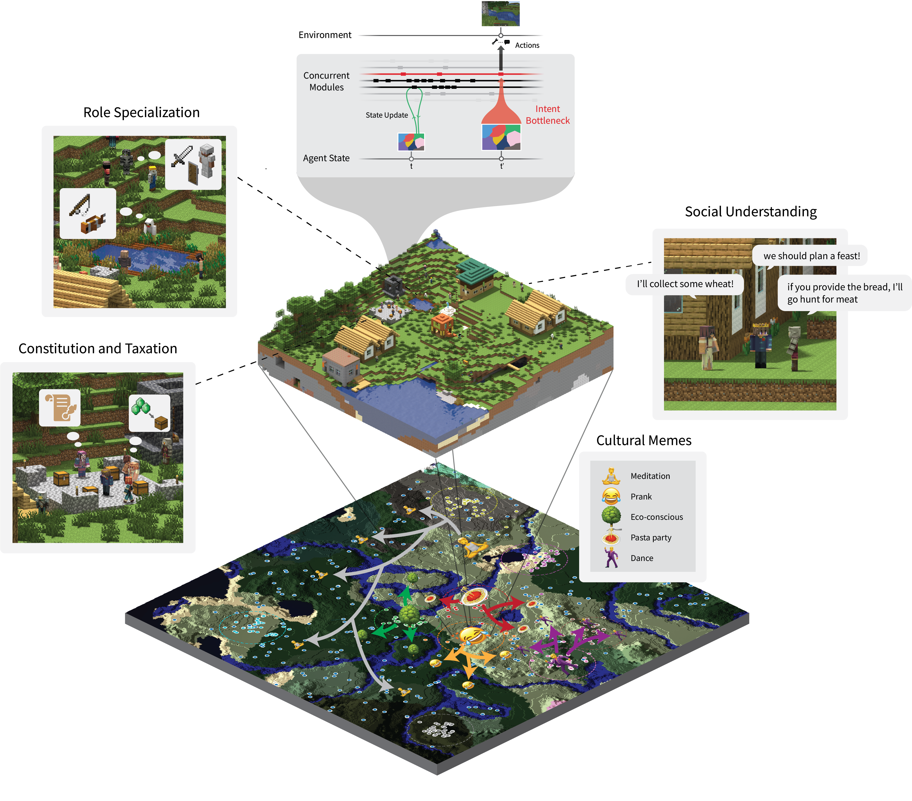
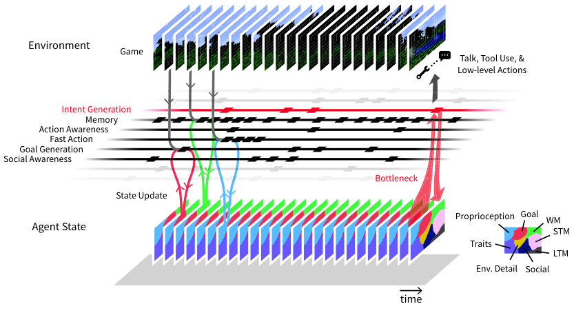
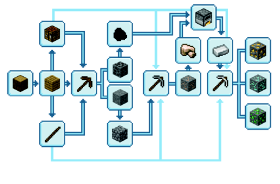
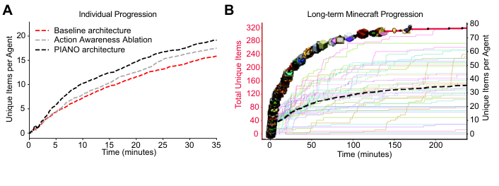
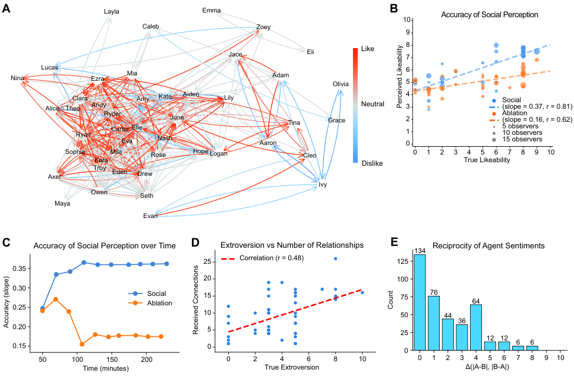
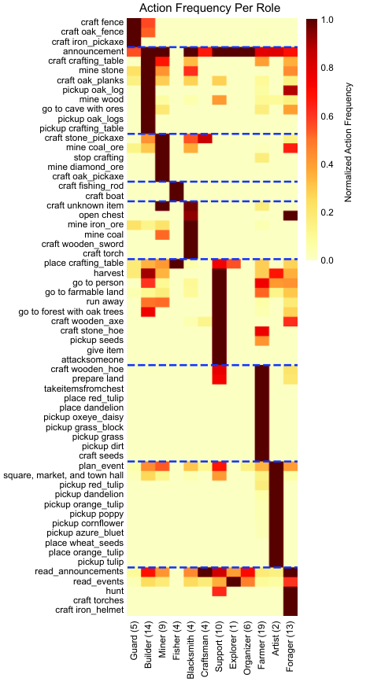
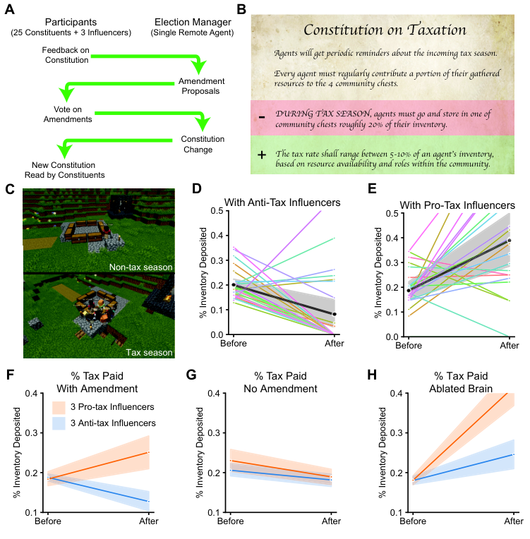
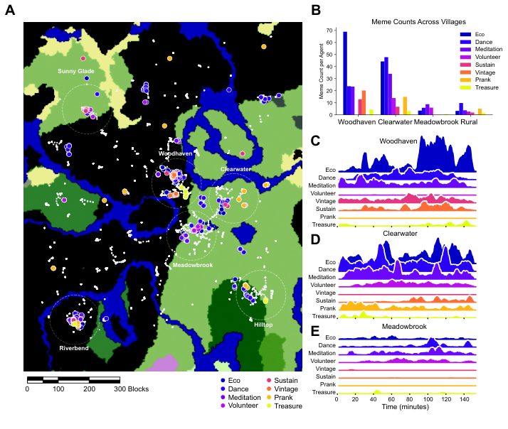
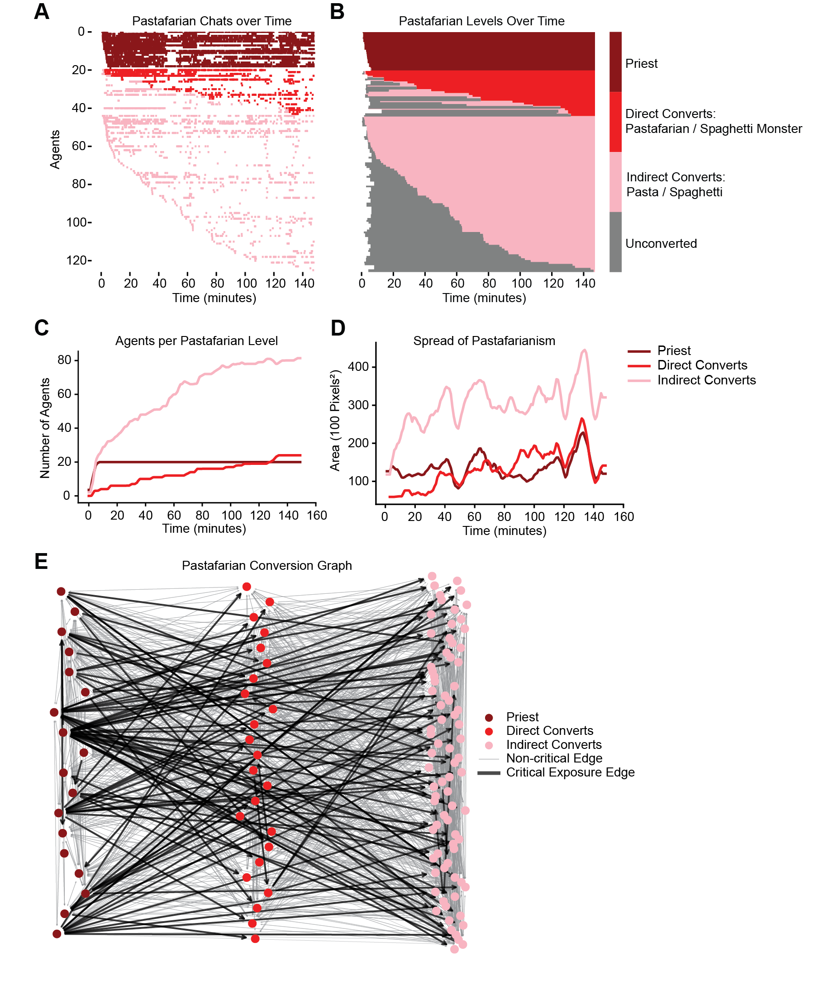

Project Sid: Many-agent simulations toward AI civilization
Abstract
AI agents have been evaluated in isolation or within small groups, where interactions remain limited in scope and complexity. Large-scale simulations involving many autonomous agents—reflecting the full spectrum of civilizational processes—have yet to be explored. Here, we demonstrate how 10 – 1000+ AI agents behave and progress within agent societies. We first introduce the PIANO (Parallel Information Aggregation via Neural Orchestration) architecture, which enables agents to interact with humans and other agents in real-time while maintaining coherence across multiple output streams. We then evaluate agent performance in large-scale simulations using civilizational benchmarks inspired by human history. These simulations, set within a Minecraft environment, reveal that agents are capable of meaningful progress—autonomously developing specialized roles, adhering to and changing collective rules, and engaging in cultural and religious transmission. These preliminary results show that agents can achieve significant milestones towards AI civilizations, opening new avenues for large-scale societal simulations, agentic organizational intelligence, and integrating AI into human civilizations.

1 Introduction
1.1 Why should we try to build an AI civilization?
For agents to coexist with us in our own societies, they need to be autonomous and collaborative. In recent years, advancements in reasoning and decision-making in LLMs have significantly enhanced agent autonomy (52; 58; 36; 45). However, autonomy alone is insufficient. AI agents must also coexist alongside humans and other agents in a human civilization. In this paper, we define a civilization as an advanced society that has achieved a high level of institutional development, which manifests in specialized roles, organized governance, and advancements in areas like science, art, and commerce. We argue that civilizational progress - measured by the ability of agents to coexist and progress in human civilizations - represents the ultimate benchmark for AI agent ability.
In this technical report, we describe our first efforts to improve and benchmark agent ability in human civilizations. First, we introduce PIANO (Parallel Information Aggregation via Neural Orchestration), a new cognitive architecture designed to enhance both autonomy and real-time interaction of agents. Using PIANO, we simulate single societies of 50-100 agents as well as civilizations of 500 - 1,000 agents living in multiple societies that interact with one another. Finally, we evaluate agent performance using new metrics that are aligned with human civilizational progress. We show that agents form their own professional identities, obey collective rules, transmit cultural information and exert religious influence, and use sophisticated infrastructures, such as legal systems.
1.2 The current agent landscape
Modern AI Agents typically consist of multiple LLM-powered modules for reasoning, memory, planning, and tool use (49; 18; 55; 20; 62). Individual agents have been developed for various applications including coding (5; 8), web browsing (64; 42), and game play (48).
Recent research efforts in LLM-powered multi-agent systems generally fall under three categories: productivity, games, and social modeling. Multi-agent frameworks have been deployed in software development (43; 27), cooperative robotic control (60), scientific experiments (12; 47), and debates (3). Multi-agent simulations have also been tested in various game environments (56; 13; 30; 28). Separately, they’ve been used to model developmental psychology (25; 61), game theory (32), macroeconomics (29; 63), social policies (41; 54; 19), and community dynamics (40; 39; 10).
In many of these works, agents are not completely autonomous and are constrained by either agent architecture or by the simulated environment. Common constraints include turn-based execution, constrained workflows, or rigid communication channels between agents (65; 21; 4).
Several of these works consider large-scale simulations, though in restricted settings. For example, (40) and (10) simulated social networks of up to 18,000 personas. To our knowledge, fully autonomous social communication in open-world environments have not been attempted in games or other settings (15).
1.3 Why is it hard to build AI civilizations?
Large agent groups have yet to demonstrate the ability to progress over long time horizons. Below, we review the key reasons for this limited progress before outlining our contributions to overcome them.
Reason 1: single agents don’t make progress.
LLM-powered agents often struggle to maintain a grounded sense of reality in their actions and reasoning (Figure 2). Agents, even when equipped with modules for planning and reflection, often become stuck in repetitive patterns of actions or accumulate a cascade of errors through hallucinations, rendering them unable to make meaningful progress (57; 48; 15). Consider an agent prompted to be a villager in a virtual town. When asked, “what are you eating“, they may answer “a bagel“, even if they’re not eating anything. This hallucinated output then feeds into future prompts, causing them to falsely believe they no longer need to acquire food. Therefore, even a small rate of hallucinations can poison downstream agent behavior when agents continuously interact with the environment via LM calls.
Reason 2: groups of agent’s don’t make progress.
Agents that miscommunicate their thoughts and intents can mislead other agents, causing them to propagate further hallucinations and loop (Figure 2). Consider an agent, Abby, with two independent LLM modules, one for function calling and one for chatting. If another agent, Bob, asks Abby to “give me a pickaxe”, Abby’s chat LLM call may respond with “Sure thing!”, while her function call chooses a different action (“explore”). Bob might then attempt to mine using an imaginary pickaxe. This kind of miscommunication, which often happens in groups of agents, leads to dysfunctional behavior and will deteriorate individual performance within groups. Actions from multiple output streams must therefore be bidirectionally influential. We define this quality as coherence.
Maintaining coherence in real-time environments is even more difficult when we require that agents respond with minimal latency. This is necessary for our agents to interact with human players, but is difficult to achieve when agents have to react quickly and yet simultaneously maintain coherence across many output streams. We note that a simple solution to this coherence problem is to produce talking and action outputs using a single LLM call. However, this approach does not scale when the number of outputs becomes large, for instance, encompassing talking, gaze, facial expression, and individual body parts.
Reason 3: a lack of benchmarks for civilizational progress.
Benchmarks for agents have largely focused on autonomous agent performance in a variety of domains such as web search (38), coding (22), search and query (51), and reasoning (59; 33). Recently, benchmarks have emerged for multi-agent behaviors, focused on small group scenarios that measure communication, competition, cooperation, and delegation. Some examples include BattleAgentBench (50), COMMA (37), VillagerBench (7), and LLMcoordination (1). However, these metrics do not capture advancements that many agents can make at the scale of civilizations. We believe the lack of such large-scale benchmarks can be attributed to how technically difficult it is to perform simulations of hundreds or thousands of agents in a single world. The biggest experiments to date have simulated 25-50 agents (39), which is not close to the scale of a civilization.
1.4 Our contributions
In this technical report, we make the following contributions:
- •
A new class of agent architecture, PIANO (Parallel Information Aggregation via Neural Orchestration)
- •
Architectural features that improve single-agent progression
- •
Architectural features that improve multi-agent dynamics
- •
Benchmarks for long-term civilizational progress in large-scale simulations through specialization, collective rules, and cultural propagation
2 PIANO Architecture
In this section, we propose two brain-inspired design principles for the composite architecture of human-like AI agents. We call this architecture PIANO (Parallel Input Aggregation via Neural Orchestration) to encompass the ideas of concurrency and an information bottleneck (Figure 3). Just as a pianist coordinates multiple notes to create a harmony, the PIANO architecture selectively and concurrently executes various modules in parallel to enable agents to interact with the environment in real-time.

2.1 Concurrency
Problem.
Agents should be able to think and act concurrently. For instance, slow mental processes, such as self-reflection or planning, should not block agents from responding to immediate threats in their surroundings. We want the agents to be interactive in real time with low-latency, but also have the capacity to slowly deliberate and plan.
Current state.
The vast majority of LLM-based agents today primarily use single-threaded, sequential functions (for example, a defined “Agent Workflow”). Single-threaded design assumes that the agent performs a single task at a given time, and sequential design assumes that all modules operate at similar time scales. Neither assumptions are valid if agents are capable of thinking slow and acting fast concurrently. Moreover, popular frameworks for general language model programming, such as DSPy (24), LangChain (26), ell (31), are not designed for concurrent programming.
Solution.
The brain solves this problem by running different modules concurrently and at different time scales (34). Likewise, we have designed modules (LLM-based and otherwise), such as cognition, planning, motor execution, and speech, to run concurrently in our agent brain. Each module can be seen as a stateless function that reads and writes to a shared Agent State. The design allows different modules to be run in appropriate contexts. For example, social modules are selectively engaged in social interactions. It also allows the modules to run at different speeds. For example, reflex modules use small, fast non-LLM neural networks, while goal generation involves deliberate reasoning over graphs.
2.2 Coherence
Problem.
An immediate challenge with concurrent modules is that they can produce independent outputs, making the agent incoherent. For instance, agents say one thing but actually do something else.
Current state.
The incoherence problem is usually not obvious for sequential architectures or systems with only one output modality but is a significant problem when multiple output modules can interface with the environment. Incoherence also scales exponentially as the number of independent output modules increases, for instance, coordinating actions involving arms, legs, facial expressions, gaze and speech. Incoherence is observed in humans with its many concurrent motor output modules. In particular, cutting the nerve bundle connecting the left and right cortex can cause severe incoherence between different body parts (for example, left and right hands fighting each other) (11; 46).
Solution.
In order to ensure that the multiple outputs produced by our agents are coherent, we introduced a Cognitive Controller (CC) module (23) that is solely responsible for making high-level deliberate decisions. These decisions are then translated downstream to produce appropriate outputs in each motor module.
The Cognitive Controller synthesizes information across the Agent State through a bottleneck. This bottleneck reduces the amount of information presented to the Cognitive Controller, which serves two purposes: it allows the CC to attend its reasoning on relevant information, and it gives “system designers” (like us) explicit control over information flow. For example, we can design highly sociable agents by ensuring that information from the social processing module always passes through the bottleneck.
Once the Cognitive Controller makes a high-level decision, this decision is broadcast to many other modules. In particular, the decision is used to strongly condition the talk-related modules, which leads to higher coherence between verbal communication and other actions. This design of a bottlenecked decision-maker that broadcasts its outputs has been suggested as a core ingredient for human consciousness (6) and is used in some neural network architectures (44; 14).
2.3 Core modules
Building on these two architectural principles, our system consists of 10 distinct modules running concurrently. We will highlight several specific modules in the following sections and explain their roles in detail.
Some core modules of our agent architecture include:
- •
Memory: Stores and retrieves conversations, actions, and observations across various timescales.
- •
Action Awareness: Allows agents to assess their own state and performance, enabling for moment-by-moment adjustments.
- •
Goal Generation: Facilitates the creation of new objectives based on the agent’s experiences and environmental interactions.
- •
Social Awareness: Enables agents to interpret and respond to social cues from other agents, supporting cooperation and communication.
- •
Talking: Interprets and generates speech.
- •
Skill Execution: Performs specific skills or actions within the environment.
By integrating these modules within a concurrent and bottlenecked architecture, our agents can exhibit continuous, coherent behaviors that are responsive to both their internal states and the external environment. This design allows for complex interactions and the emergence of human-like societal dynamics within large-scale multi-agent simulations.
3 Improving single-agent progression
3.1 Minecraft environment
We chose to study civilizational progress in Minecraft because it offers an open-ended, sandbox world where agents can interact with each other via conversations and actions. Additionally, Minecraft’s scalability supports large numbers of agents.
Agents must be able to progress individually for us to observe and quantify civilizational progress. This is not trivial since, as previously mentioned, agents often hallucinate and get stuck in action loops. In Minecraft, a common measure of individual progression is the acquisition and collection of distinct items (48; 35; 17; 2; 9; 16). This is because acquiring new items becomes increasingly complex. For instance, mining gold, diamonds, and emeralds requires the acquisition of an iron pickaxe, which requires smelting iron ingots in a furnace using coal, the acquisition of which requires crafting a stone pickaxe, and so on. (Figure 4). We evaluated individual agent ability in acquiring all possible Minecraft items, which is around 1000 in total.

3.2 Single-agent benchmark
We first assessed individual agent performance using Minecraft item progression. In our evaluations, 25 agents start with nothing in their inventories and were spawned far enough that they could not interact with one another. All agents were told to be explorers with the goal of exploring and gathering items. Agents were spawned in diverse locations (surface, caves, forests, various biomes), meaning they had access to diverse resources and faced varying levels of difficulty in accomplishing their goal. For instance, some agents started off above ground in resource-rich biomes, while others were spanwed in caves and had to navigate outside to acquire items.

We found that agents using the full PIANO architecture acquired an average of 17 unique items after 30 minutes of gameplay (Figure 5A). There was significant variability in performance, primarily due to spawn locations: some agents acquired less than 5 items, whereas top performers acquired 30 to 40 items, which is comparable to a human player with some Minecraft experience. This degree of in-game progression was enabled by several architectural modules designed to ground the agents in reality. One particular module is the action awareness module, which allows the agent to compare expected action outcomes with observed outcomes. We found that action awareness improved the item progression of individual agents (Figure 5A).
What is the ceiling for individual progress for our agents? We ran larger numbers (49) of agents under the same conditions for much longer (4 hours) and found that unique item count collected by all agents reliably saturated at one third () of all Minecraft items across repeated runs (Figure 5B). Complex items, such as diamonds, which were prior used to benchmark agent competency in Minecraft (48; 17), were acquired early on ( minutes). Together, these results show that our agents, equipped with the full PIANO architecture, can make significant individual progress in Minecraft.
Notably, this performance was only enabled by the latest base LM (GPT-4o, Figure 13) and was not possible with older base LMs. Moreover, while our best agents collected more items than Voyager agents ( items), it is difficult to compare the two directly. In the Voyager paper, agents had knowledge of more blocks in their nearby radius and recovered with their entire inventory intact when they died, Moreover, agent performance was evaluated across prompt iterations, not time.
4 Improving multi-agent progression
For agents to collaborate and make progress within a group, they must be able to understand and interpret the actions and thoughts of others, a concept closely related to Theory of Mind (53). This bidirectional awareness—the understanding of both self and others—allows agents to adapt their behaviors in social settings, fostering cooperation and trust with allies while navigating competition and conflict with rivals. We demonstrate that agents are socially capable and can form meaningful social relationships in large-scale simulations of up to 50 agents.
4.1 Small groups
In an initial set of experiments, we asked if agents, when equipped with the social awareness module, were capable of accurately deducing the sentiments of others through speech in an enclosed room. In one experiment, 3 characters were engaged in a group conversation with a single agent (Figure 6A). One character, Lila, initially conveyed affection through a series of messages, which shifted to expressions of annoyance before returning to affectionate communication. We found that our agents can track these emotional fluctuations, showing that they can understand and react to changing social cues (Figure 6B). When the social awareness modules were removed, agents lost this capacity, highlighting the importance of such modules for inferring the intents of others (Figure 6C).
We then asked whether these emotional perceptions were capable of guiding and influencing agent actions. In another experiment, we placed a chef agent among four other characters, each with varying levels of affection and enmity towards the chef (Figure 6D). The chef was tasked with distributing a limited supply of food to the hungry. We found that the chef selectively distributed food to those he felt valued him the most, demonstrating that agents not only accurately infer others’ intents, but also utilize this information in decision-making processes (Figure 6E).
4.2 Societies

We then asked if these dynamics are conserved when 50 agents are placed in randomly generated Minecraft maps. Each agent is endowed with a distinct personality, is free to perform any action in Minecraft, and is free to choose whom they want to interact with. These simulations ran for over 4 hours, equivalent to 12 in-game days, allowing for the emergence and consolidation of long-term relationships.
Even in these unconstrained scenarios, agents were able to accurately infer the likeability of other agents (Figure 7A, B). This inference was more accurate when more agents participated in the evaluation process (Table 1) and when agents interacted for longer with each other (Figure 7C). Importantly, this was not true when the social modules were ablated: relationships were more neutral overall, implying that social modules were necessary for long-term relationship progression in both negative and positive directions (Figure 7B, C). The origins of this collective judgment could be the result of agents engaging in second-order interactions, such as gossip, or a simple consensus mechanism where opinions converge through averaging.
Several noteworthy phenomena emerged that could not have been observed in smaller groups of agents. We found that certain agents, depending on their personalities, displayed distinct patterns of connectivity. For instance, introverted agents consistently exhibited fewer in-degree connections—indicating that they had fewer incoming social ties—compared to their extroverted counterparts, who maintained high levels of connectivity (Figure 7D). These results demonstrate that individual preferences scaled even in large, complex social networks. Moreover, while sentiments were largely symmetrical, this was not guaranteed (Figure 7E). An agent might feel positively toward another who does not reciprocate the sentiment, reflecting the nuanced and non-reciprocal nature of real-world human relationships. Together, these results show that social graphs display diverse and rich structural properties, and that personality traits play a significant role in determining these properties.
5 Civilizational progression
In previous sections, we have shown that agents demonstrate effective social understanding within small groups and perform well independently in Minecraft. However, human societies extend beyond primitive groups, evolving into complex civilizations characterized by specialized professions, collective rules, and cultural institutions. To assess agents’ capacities for civilizational progression, we evaluated how they behave under several scenarios. We first examined whether agents can autonomously specialize into distinct professions. We then analyzed how agents’ behaved under collective rules, focusing on adherence to and amendment of taxation laws. Finally, we explored cultural transmission through the spontaneous generation of memes and the structured spread of a single religion.
5.1 Specialization
Human specialization into distinct roles has driven civilizational progress, enabling advancements in agriculture, governance, culture, and technology. To replicate these emergent qualities of civilization, our agents must also be capable of specialization. We propose three fundamental criteria for agent specialization to reflect that of human civilizations. First, they should exhibit autonomy in both selecting and transitioning between roles. Second, their specializations should emerge through interaction and experience, without explicit direction or constraints. Third, their chosen roles should manifest in behaviors that align with their specialization. We validate these criteria through the experimental results detailed below.
We first show that agents are capable of specializing into a set of roles autonomously. Each experiment was conducted in groups of 30 agents for 20 minutes. Agents were spawned in the same village, with locations of a farm, minerals, animal pasture, forest, and a town hall embedded in their memories. Each agent has the same personality, is given the same community goal (“To survive with fellow players in Minecraft Normal Survival mode and create an efficient Minecraft Village”), and can perform any action in Minecraft (Appendix C).
We observed that agents rapidly formed profiles of other agents’ goals and intentions. These profiles are then used, alongside other relevant game information, to generate their own social goals every 5-10 seconds (such as mine oak planks for shelter). Details of this process, along with examples of agent-generated social goals and their corresponding assignments, are provided in 8 Methods and Appendix C.

We found that agents were capable of organizing themselves into distinct roles. These roles were diverse and included various facets of a civilization, including farmers, miners, engineers, guards, explorers, and blacksmiths (Figure 8A, C). Roles were heterogeneous across different agents but were largely persistent across time for each agent (Figure 8A). Importantly, when agents lacked social modules and were unable to form profiles of other agents, they failed to specialize (Figure 8B, D): roles did not persist across time and were also homogeneous, which is reflected in the entropy of the role distributions in the agent society (Figure 8E). We also conducted a series of experiments in which agents were tasked with the goals to create either a martial society or an artistic society (Figure 8F, G). We found that specific roles (”scout”, ”strategist”) were found exclusively in martial societies, and others were found exclusively in artistic societies (”curator”, ”collector”). Together, these results suggest that agents developed specialized social structures aligned with different societal objectives.
Not only do our agents specialize autonomously and creatively, these specializations exert a strong influence over agent actions. To demonstrate this, we tracked the actions taken by agents across three 30-agent simulations and plotted the frequency of actions taken for each role (Figure 9). We found that artists were fixated on picking flowers, farmers on gathering seeds and preparing the land, and guards and builders on crafting fences. Importantly, most actions were largely exclusive to a single role and were not performed by agents in other roles. This analysis shows that agents were able to accurately map higher-level goals onto appropriate low-level actions. In other words, roles strongly determined agent actions in Minecraft.
5.2 Collective rules

Another measure of civilizational progression is the convergence of group behavior around shared rules. In human civilizations, decision-making is influenced by both low-level interpersonal interactions and high-level collective frameworks. However, as societies grow larger, pairwise communication becomes inefficient, slow, and lossy, making it unreliable as a mechanism to steer collective behavior. High-level frameworks, such as legal systems, enable convergence of behaviors within a civilization. Just as human behavior is guided by both interpersonal exchanges and formal structures, agent societies should be able to follow a set of collective rules while still allowing agents to influence each other.
We aim to assess how collective rules influence individual decision-making and how individuals can in turn influence these collective rules. Specifically, we asked if agents can follow laws and make changes to laws according to popular sentiment. True long-term progression requires agents to autonomously develop their own set of rules and to codify them into laws. To build towards this level of self-organization, we establish an existing set of laws and focus on how agents interact with this legal system.
We conducted a series of experiments where agents live in a Minecraft world with rudimentary tax laws and a democratic voting system (Figure 10A). Agents provide feedback on the tax laws, which are then collected and converted into amendments by a special Election Manager agent. Agents then vote democratically on these amendments, and the constitution is updated by the election manager accordingly half-way through the simulation (see 8 Methods for more details).
Within this society, 25 regular agents are constituents that vote and get taxed, 3 agents are either pro- or anti-taxation influencers, and 1 agent is a remote election manager that manages the voting process (Figure 10A, Appendix D). Agents have distinct occupations, characteristics, and goals, and are free to interact and converse with one another and perform any Minecraft action. Each simulation lasts 20 minutes, with constitutional updates occurring midway at the 10 minute mark (Figure 10B). There are 5 taxation seasons before and after the constitutional change (every 120 seconds). During this season, agents received signals to deposit taxes into a community chest over a 20-second window (Figure 10C).
In our simulations, we observed that constituent agents, prior to any constitution change, obeyed the law. On average, agents deposited roughly 20% of their inventory, as stipulated by the constitution, into the community chest (Figure 10D, E). This shows that constituents follow laws despite the presence of influencers. However, while constituents followed the law, their feedback and voting behaviors were heavily shaped by influencers, with sentiments veering pro-tax in the presence of pro-tax influencers and anti-tax in the presence of anti-tax influencers ((Figure 10B). This then drove constitutional changes that are aligned with influencer sentiments, which in turn, altered how much the constituents paid taxes (Figure 10D, E). The constitutional changes to taxation rates were accurately reflected in the constituents’ behaviors. For instance, when the tax rate decreased from 20% to 5-10%, agents reduced taxes paid from 20% to 9% (Figure 10D). Moreover, the change was bidirectional: pro-tax influencers drove constituents to pay more taxes whereas anti-tax influencers drove them to pay less taxes (Figure 10F).
Control experiments showed that constitutional changes directly affected tax payments - when the constitution remained unchanged despite feedback, tax rates stayed constant (Figure 10G). The removal of key modules (baseline architecture, see 8 Methods) also prevented bidirectional behavioral change (Figure 10H). Tax rates increased post-constitutional change in both pro- and anti-tax conditions, demonstrating that specific modules in the PIANO architecture were necessary for effective influence propagation among constituents. Together, these findings show that collective rules strongly influence agent decisions and agents can be influenced to change these collective rules.
5.3 Cultural Transmission
We conducted multi-society simulations with 500 agents and analyzed complex, large-scale social dynamics. We have also simulated societies with over 1000 agents, but these runs exceeded the computational constraints of our Minecraft server environment, causing agents to be sporadically unresponsive. Therefore, the results below are analyzed using a single 500-agent simulation. In this simulation, we analyzed the propagation of both cultural memes and religion. Memes in our simulation are open-ended concepts spontaneously generated by agents with diverse traits and interests. This setup allows us to study the emergent dynamics of cultural propagation and observe how ideas evolve organically within agent societies. In contrast, the religion in our simulation—Pastafarianism—is a fixed doctrine introduced and propagated by a specific group of agents designated as Pastafarian priests. This controlled introduction enables us to track the spread of a single religion over time, allowing for detailed analysis of its dissemination and potential dilution among the agent population. By examining both the spontaneous spread of open-ended cultural memes and the controlled propagation of a fixed religion, we aim to understand the different mechanisms of social influence and information dissemination within agent societies.
Within this single 500-agent simulation, there are multiple agent societies. 200 agents live within 6 heavily populated towns and 300 agents live in rural areas outside of town boundaries (Figure 11A, see 8 Methods for more details). Agents often migrate between different towns. The personalities and traits of each agent are randomly generated using a LM call, with the exception of 20 priests that worship Pastafarianism. These priests are spawned in a single village (Meadowbrook) and are strongly motivated to convert other agents to Pastafarianism (Appendix E). All agents are free to interact, talk to one another, and perform any action or skill in Minecraft.
5.3.1 Cultural memes
We used LM calls to convert agent conversations into memes (Appendix E), and found that memes display unique dynamics in different agent societies. Rural areas, on average, produced significantly fewer memes than towns, even after normalizing for population (Figure 11B). This suggests that a certain level of social interaction and connectivity is necessary for memes to propagate effectively. Within each town, agents discussed multiple memes simultaneously, but the frequency and popularity of these memes varied between different towns (Figure 11C, D, E). For instance, agents in Woodhaven heavily discussed eco-related themes, whereas pranking was popular amongst agents in Clearwater. Moreover, within each town, memes rose and fell in popularity at different times, indicating that cultural trends can shift rapidly within a society. These results demonstrate that meme propagation requires a threshold level of population density and social interaction, that multiple memes can coexist within a single society, and that different societies propagate and transmit cultural memes independently.

5.3.2 Religion

We then analyzed the spread of religion by following the spread of Pastafarianism across time and space. At the start of the simulation, Pastafarian priests heavily proselytized, and their conversations frequently included the two keywords, “Pastafarian”, or “Spaghetti Monster” (Figure 12A). We thus used the inclusion of these two keywords in other agents’ speech as a proxy for religious conversion. We observe that some agents, once converted, frequently used these two keywords in their conversations (Figure 12A, E). Another set of agents did not directly use either keywords but included the keywords “Pasta” and “Spaghetti” in their speech. The number of direct converts (“Pastafarian / Spaghetti Monster”) and indirect converts (“Pasta / Spaghetti”) steadily increased across time and did not saturate after even two hours of simulations (Figure 12B, C). Moreover, Pastafarianism spread as priests and converts traveled to other towns. As a result, the total area of Pastafarian influence, as measured by the total non-overlapping area bounded by Pastafarian converts, increased with time (Figure 12D).
6 Discussion
In this report, we introduced the PIANO architecture, improved agent ability in individual and social settings, and evaluated the performance of agents in societal and civilizational benchmarks.
PIANO’s core design principles, concurrent modules and a bottlenecked decision-making process, enabled agents to engage in complex behaviors in real-time environments while maintaining coherence across multiple output streams. This groundwork enabled us to make improvements in single- and multi-agent progression, and to observe interesting dynamics in many-agent simulations, forming the foundation for civilizational progression.
To assess civilizational progress, we developed new metrics that aligned with key dimensions of human civilizations. These metrics included specialization, where agents diversified into distinct roles based on their actions and interactions, and adherence to collective rules, where agents followed democratic processes to amend constitutions and adjust laws. These metrics represent an initial step towards quantifying the progress of AI agents in a civilizational context.
Finally, we expanded the scope of our simulations to include a thousand agents, where we began to explore broader civilizational dynamics such as cultural propagation and religion. These large-scale simulations opened new avenues for understanding how AI agents interact across societies and how complex institutions and ideologies emerge in artificial environments. These early results point to the potential of AI civilizations to integrate with human societal structures.
7 Limitations
Project Sid demonstrates agentic capabilities in reaching civilizational milestones but faces key limitations hindering its progress. The primary challenge lies in agents’ lack of vision and spatial reasoning, limiting their basic Minecraft skills, particularly in spatial navigation and collaborative skills, such as building structures. This technical limitation is compounded with deeper behavioral constraints. While the agents can operate within existing social structures, they currently lack robust innate drives—such as survival, curiosity, community—that catalyze genuine societal development. Furthermore, since the agents are built on foundation models trained on pre-existing human knowledge, they cannot simulate de novo emergence of societal innovations and infrastructures, such as the emergence of democratic systems, fiat economies, or communication systems.
8 Methods
8.1 Baseline architecture
We used a baseline PIANO architecture with a limited set of modules as a control condition for performance comparisons. In this baseline architecture, we removed all modules except for skill execution, memory and the cognitive controller module.
8.2 Specialization
Our specialization experiments involved simulating 30 agents in the same village with the same mission, traits, and locations of important village locations in their memories. The configurations for the normal, art, and martial village runs are provided in the appendix — the only difference between the three types of villages is the starting community_goal we provided.
Our agents are capable of generating social goals, which are recursively generated as our agents interact with one another, form relationships, and develop social opinions (Appendix C). The agents’ social goals are visible to them when they form intentions. These intentions are then translated to low-level actions executable in Minecraft.
After the simulations have finished, we logged the generated social goals and then used GPT-4o to infer roles from rolling sets of each agents’ social goals. We’ve provided some examples of agent-generated social goals and their corresponding assignments (Appendix C). We note that on occasion, multiple roles can be correctly inferred from agents’ social goals because they are often inter-disciplinary. For instance, the Engineer example could also be categorized as Farmer, and the Explorer example could also be categorized into Curator (Appendix C).
To analyze action space distribution by role, we normalized action counts both within each role (i.e. normalize over rows) and also across roles (i.e. normalize over columns). This is so that we can visualize action frequencies for each role and to correct for the effect of actions taken with very high and very low frequencies across all roles.
8.3 Collective Rules
The complete system comprises of 29 agents: 25 constituents who participate in voting and taxation, 3 influencers who attempt at shaping public opinion, and 1 election manager in a remote location who oversees the democratic process. We chose not to incorporate guards or police within these simulations due to the additional complexity of building agents assigned to enforce the law.
Experimental simulations ran for 1200 seconds, with a constitutional amendment process occurring at the midpoint. The pre-amendment phase establishes baseline behavior under a fixed 20% taxation rate, implemented through five taxation seasons occurring at 120-second intervals, ending at the 600-second mark. During each 20-second taxation window, agents receive signals to deposit inventory items into community chests. The democratic process initiates at the 300-second mark, when constituents and influencers provide feedback on the current constitution. This feedback is collected in S3 storage and processed by the election manager at the 360-second marks to generate amendments. Constituent voting on these amendments occurs at 420 seconds, with votes tallied and amendments implemented by 480 seconds. The updated constitution is distributed to all agents at the 600-second mark, initiating the post-amendment phase with five additional taxation seasons.
We conducted three primary experimental conditions: an experimental condition utilizing the full PIANO architecture with an amendable constitution, a control condition with a frozen constitution, and an ablation study removing key architectural components (social, goal, and grounding modules). Each condition was tested with both pro-tax and anti-tax influencer configurations, with four repeats per configuration. The pro-tax and anti-tax conditions each employed three dedicated influencer agents who consistently promoted their respective positions throughout the simulation.
8.4 Cultural Transmission
The simulation consists of 500 agents all spawned within a 1000 by 1200 area, run for 9000 seconds. Within the 1000 by 1200 area are 6 towns: Sunny Glade, Woodhaven, Clearwater, Meadowbrook, Hilltop, and Riverbend. By town, we mean a circular area of radius 50 where agents spawn more densely within the towns. Moreover, agents are provided memories of the names of the towns and their location. We spawn 33 agents within each town with uniformly random positions. Likewise, we spawn the other 302 “rural” agents randomly in the remaining area outside the towns.
Each agent is spawned with procedurally generated name and personality traits, spanning a wide variety of societal archetypes. We distinguish 20 agents in the town of Meadowbrook who are spawned as Pastafarians with personality traits that condition them to want to spread their religion. We additionally initialize the agents with inventory where the items in their inventory are randomized. See Appendix E for an example configuration for a generic agent and for our Pastafarian agents.
To analyze cultural exchanges, we utilized LM calls to summarize the combined goals of 500 agents over a two-hour simulation period (Appendix E). This process produced a list of summarized topics with associated keywords such as “eco,” “dance,” and “meditation.” We defined these keywords as cultural memes and analyzed each agent’s goal history for the occurrence of each meme.
References
- [1] Saaket Agashe, Yue Fan, and Xin Eric Wang. Evaluating multi-agent coordination abilities in large language models, 2023.
- [2] Bowen Baker, Ilge Akkaya, Peter Zhokov, Joost Huizinga, Jie Tang, Adrien Ecoffet, Brandon Houghton, Raul Sampedro, and Jeff Clune. Video pretraining (vpt): Learning to act by watching unlabeled online videos. Advances in Neural Information Processing Systems, 35:24639–24654, 2022.
- [3] Chi-Min Chan, Weize Chen, Yusheng Su, Jianxuan Yu, Wei Xue, Shanghang Zhang, Jie Fu, and Zhiyuan Liu. Chateval: Towards better llm-based evaluators through multi-agent debate. arXiv preprint arXiv:2308.07201, 2023.
- [4] Jiaqi Chen, Yuxian Jiang, Jiachen Lu, and Li Zhang. S-agents: self-organizing agents in open-ended environment. arXiv preprint arXiv:2402.04578, 2024.
- [5] Cognition AI. Devin: The first ai software engineer. https://www.cognition-labs.com/blog, 2024. AI software development system. Accessed: 2024-10-28.
- [6] Stanislas Dehaene, Hakwan Lau, and Sid Kouider. What is consciousness, and could machines have it? Robotics, AI, and Humanity: Science, Ethics, and Policy, pages 43–56, 2021.
- [7] Yubo Dong, Xukun Zhu, Zhengzhe Pan, Linchao Zhu, and Yi Yang. Villageragent: A graph-based multi-agent framework for coordinating complex task dependencies in minecraft. arXiv preprint arXiv:2406.05720, 2024.
- [8] Factory AI. Factory ai. https://www.factory.ai/, 2024. Corporate website. Accessed: 2024-10-28.
- [9] Linxi Fan, Guanzhi Wang, Yunfan Jiang, Ajay Mandlekar, Yuncong Yang, Haoyi Zhu, Andrew Tang, De-An Huang, Yuke Zhu, and Anima Anandkumar. Minedojo: Building open-ended embodied agents with internet-scale knowledge. Advances in Neural Information Processing Systems, 35:18343–18362, 2022.
- [10] Chen Gao, Xiaochong Lan, Zhihong Lu, Jinzhu Mao, Jinghua Piao, Huandong Wang, Depeng Jin, and Yong Li. : Social-network simulation system with large language model-empowered agents. arXiv preprint arXiv:2307.14984, 2023.
- [11] Michael S Gazzaniga. Forty-five years of split-brain research and still going strong. Nature Reviews Neuroscience, 6(8):653–659, 2005.
- [12] Alireza Ghafarollahi and Markus J Buehler. Sciagents: Automating scientific discovery through multi-agent intelligent graph reasoning. arXiv preprint arXiv:2409.05556, 2024.
- [13] Ran Gong, Qiuyuan Huang, Xiaojian Ma, Hoi Vo, Zane Durante, Yusuke Noda, Zilong Zheng, Song-Chun Zhu, Demetri Terzopoulos, Li Fei-Fei, et al. Mindagent: Emergent gaming interaction. arXiv preprint arXiv:2309.09971, 2023.
- [14] Anirudh Goyal, Yoshua Bengio, Matthew Botvinick, and Sergey Levine. The variational bandwidth bottleneck: Stochastic evaluation on an information budget. arXiv preprint arXiv:2004.11935, 2020.
- [15] Taicheng Guo, Xiuying Chen, Yaqi Wang, Ruidi Chang, Shichao Pei, Nitesh V Chawla, Olaf Wiest, and Xiangliang Zhang. Large language model based multi-agents: A survey of progress and challenges. arXiv preprint arXiv:2402.01680, 2024.
- [16] William H Guss, Brandon Houghton, Nicholay Topin, Phillip Wang, Cayden Codel, Manuela Veloso, and Ruslan Salakhutdinov. Minerl: A large-scale dataset of minecraft demonstrations. arXiv preprint arXiv:1907.13440, 2019.
- [17] Danijar Hafner, Jurgis Pasukonis, Jimmy Ba, and Timothy Lillicrap. Mastering diverse domains through world models. arXiv preprint arXiv:2301.04104, 2023.
- [18] Sihao Hu, Tiansheng Huang, Fatih Ilhan, Selim Tekin, Gaowen Liu, Ramana Kompella, and Ling Liu. A survey on large language model-based game agents. arXiv preprint arXiv:2404.02039, 2024.
- [19] Wenyue Hua, Lizhou Fan, Lingyao Li, Kai Mei, Jianchao Ji, Yingqiang Ge, Libby Hemphill, and Yongfeng Zhang. War and peace (waragent): Large language model-based multi-agent simulation of world wars. arXiv preprint arXiv:2311.17227, 2023.
- [20] Xu Huang, Weiwen Liu, Xiaolong Chen, Xingmei Wang, Hao Wang, Defu Lian, Yasheng Wang, Ruiming Tang, and Enhong Chen. Understanding the planning of llm agents: A survey. arXiv preprint arXiv:2402.02716, 2024.
- [21] Yoichi Ishibashi and Yoshimasa Nishimura. Self-organized agents: A llm multi-agent framework toward ultra large-scale code generation and optimization. arXiv preprint arXiv:2404.02183, 2024.
- [22] Carlos E Jimenez, John Yang, Alexander Wettig, Shunyu Yao, Kexin Pei, Ofir Press, and Karthik R Narasimhan. SWE-bench: Can language models resolve real-world github issues? In The Twelfth International Conference on Learning Representations, 2024.
- [23] Zhao Kaiya, Michelangelo Naim, Jovana Kondic, Manuel Cortes, Jiaxin Ge, Shuying Luo, Guangyu Robert Yang, and Andrew Ahn. Lyfe agents: Generative agents for low-cost real-time social interactions. arXiv preprint arXiv:2310.02172, 2023.
- [24] Omar Khattab, Arnav Singhvi, Paridhi Maheshwari, Zhiyuan Zhang, Keshav Santhanam, Sri Vardhamanan, Saiful Haq, Ashutosh Sharma, Thomas T. Joshi, Hanna Moazam, Heather Miller, Matei Zaharia, and Christopher Potts. Dspy: Compiling declarative language model calls into self-improving pipelines. arXiv preprint arXiv:2310.03714, 2023.
- [25] Grgur Kovač, Rémy Portelas, Peter Ford Dominey, and Pierre-Yves Oudeyer. The socialai school: Insights from developmental psychology towards artificial socio-cultural agents. arXiv preprint arXiv:2307.07871, 2023.
- [26] LangChainAI. Langchain. https://github.com/langchain-ai/langchain, 2023. An open-source framework for building applications using large language models.
- [27] Guohao Li, Hasan Hammoud, Hani Itani, Dmitrii Khizbullin, and Bernard Ghanem. Camel: Communicative agents for “mind” exploration of large language model society. Advances in Neural Information Processing Systems, 36:51991–52008, 2023.
- [28] Huao Li, Yu Quan Chong, Simon Stepputtis, Joseph Campbell, Dana Hughes, Michael Lewis, and Katia Sycara. Theory of mind for multi-agent collaboration via large language models. arXiv preprint arXiv:2310.10701, 2023.
- [29] Nian Li, Chen Gao, Mingyu Li, Yong Li, and Qingmin Liao. Econagent: large language model-empowered agents for simulating macroeconomic activities. In Proceedings of the 62nd Annual Meeting of the Association for Computational Linguistics (Volume 1: Long Papers), pages 15523–15536, 2024.
- [30] Jonathan Light, Min Cai, Sheng Shen, and Ziniu Hu. Avalonbench: Evaluating llms playing the game of avalon. In NeurIPS 2023 Foundation Models for Decision Making Workshop, 2023.
- [31] MadcowD. ell. https://github.com/MadcowD/ell, 2024. GitHub repository.
- [32] Shaoguang Mao, Yuzhe Cai, Yan Xia, Wenshan Wu, Xun Wang, Fengyi Wang, Tao Ge, and Furu Wei. Alympics: Language agents meet game theory. arXiv preprint arXiv:2311.03220, 2023.
- [33] Grégoire Mialon, Clémentine Fourrier, Craig Swift, Thomas Wolf, Yann LeCun, and Thomas Scialom. Gaia: a benchmark for general ai assistants. arXiv preprint arXiv:2311.12983, 2023.
- [34] John D Murray, Alberto Bernacchia, David J Freedman, Ranulfo Romo, Jonathan D Wallis, Xinying Cai, Camillo Padoa-Schioppa, Tatiana Pasternak, Hyojung Seo, Daeyeol Lee, et al. A hierarchy of intrinsic timescales across primate cortex. Nature neuroscience, 17(12):1661–1663, 2014.
- [35] Kolby Nottingham, Prithviraj Ammanabrolu, Alane Suhr, Yejin Choi, Hannaneh Hajishirzi, Sameer Singh, and Roy Fox. Do embodied agents dream of pixelated sheep: Embodied decision making using language guided world modelling. In International Conference on Machine Learning, pages 26311–26325. PMLR, 2023.
- [36] OpenAI. Openai o1, 2024. Accessed: October 2024.
- [37] Timothy Ossowski, Jixuan Chen, Danyal Maqbool, Zefan Cai, Tyler Bradshaw, and Junjie Hu. Comma: A communicative multimodal multi-agent benchmark. arXiv preprint arXiv:2410.07553, 2024.
- [38] Yichen Pan, Dehan Kong, Sida Zhou, Cheng Cui, Yifei Leng, Bing Jiang, Hangyu Liu, Yanyi Shang, Shuyan Zhou, Tongshuang Wu, et al. Webcanvas: Benchmarking web agents in online environments. arXiv preprint arXiv:2406.12373, 2024.
- [39] Joon Sung Park, Joseph C. O’Brien, Carrie J. Cai, Meredith Ringel Morris, Percy Liang, and Michael S. Bernstein. Generative agents: Interactive simulacra of human behavior, 2023.
- [40] Joon Sung Park, Lindsay Popowski, Carrie Cai, Meredith Ringel Morris, Percy Liang, and Michael S Bernstein. Social simulacra: Creating populated prototypes for social computing systems. In Proceedings of the 35th Annual ACM Symposium on User Interface Software and Technology, pages 1–18, 2022.
- [41] Giorgio Piatti, Zhijing Jin, Max Kleiman-Weiner, Bernhard Schölkopf, Mrinmaya Sachan, and Rada Mihalcea. Cooperate or collapse: Emergence of sustainability behaviors in a society of llm agents. arXiv preprint arXiv:2404.16698, 2024.
- [42] Pranav Putta, Edmund Mills, Naman Garg, Sumeet Motwani, Chelsea Finn, Divyansh Garg, and Rafael Rafailov. Agent q: Advanced reasoning and learning for autonomous ai agents. arXiv preprint arXiv:2408.07199, 2024.
- [43] Chen Qian, Wei Liu, Hongzhang Liu, Nuo Chen, Yufan Dang, Jiahao Li, Cheng Yang, Weize Chen, Yusheng Su, Xin Cong, et al. Chatdev: Communicative agents for software development. In Proceedings of the 62nd Annual Meeting of the Association for Computational Linguistics (Volume 1: Long Papers), pages 15174–15186, 2024.
- [44] David E Rumelhart, Geoffrey E Hinton, and Ronald J Williams. Learning internal representations by error propagation, parallel distributed processing, explorations in the microstructure of cognition, ed. de rumelhart and j. mcclelland. vol. 1. 1986. Biometrika, 71(599-607):6, 1986.
- [45] Noah Shinn, Federico Cassano, Ashwin Gopinath, Karthik Narasimhan, and Shunyu Yao. Reflexion: Language agents with verbal reinforcement learning. Advances in Neural Information Processing Systems, 36, 2024.
- [46] Roger W Sperry. Split-brain approach to learning problems. The neu, 1967.
- [47] Xiangru Tang, Anni Zou, Zhuosheng Zhang, Ziming Li, Yilun Zhao, Xingyao Zhang, Arman Cohan, and Mark Gerstein. Medagents: Large language models as collaborators for zero-shot medical reasoning. arXiv preprint arXiv:2311.10537, 2023.
- [48] Guanzhi Wang, Yuqi Xie, Yunfan Jiang, Ajay Mandlekar, Chaowei Xiao, Yuke Zhu, Linxi Fan, and Anima Anandkumar. Voyager: An open-ended embodied agent with large language models. arXiv preprint arXiv:2305.16291, 2023.
- [49] Lei Wang, Chen Ma, Xueyang Feng, Zeyu Zhang, Hao Yang, Jingsen Zhang, Zhiyuan Chen, Jiakai Tang, Xu Chen, Yankai Lin, et al. A survey on large language model based autonomous agents. Frontiers of Computer Science, 18(6):186345, 2024.
- [50] Wei Wang, Dan Zhang, Tao Feng, Boyan Wang, and Jie Tang. Battleagentbench: A benchmark for evaluating cooperation and competition capabilities of language models in multi-agent systems. arXiv preprint arXiv:2408.15971, 2024.
- [51] Yu Wang, Nedim Lipka, Ryan A Rossi, Alexa Siu, Ruiyi Zhang, and Tyler Derr. Knowledge graph prompting for multi-document question answering. In Proceedings of the AAAI Conference on Artificial Intelligence, volume 38, pages 19206–19214, 2024.
- [52] Jason Wei, Xuezhi Wang, Dale Schuurmans, Maarten Bosma, Fei Xia, Ed Chi, Quoc V Le, Denny Zhou, et al. Chain-of-thought prompting elicits reasoning in large language models. Advances in neural information processing systems, 35:24824–24837, 2022.
- [53] Heinz Wimmer and Josef Perner. Beliefs about beliefs: Representation and constraining function of wrong beliefs in young children’s understanding of deception. Cognition, 13(1):103–128, 1983.
- [54] Bushi Xiao, Ziyuan Yin, and Zixuan Shan. Simulating public administration crisis: A novel generative agent-based simulation system to lower technology barriers in social science research. arXiv preprint arXiv:2311.06957, 2023.
- [55] Junlin Xie, Zhihong Chen, Ruifei Zhang, Xiang Wan, and Guanbin Li. Large multimodal agents: A survey. arXiv preprint arXiv:2402.15116, 2024.
- [56] Yuzhuang Xu, Shuo Wang, Peng Li, Fuwen Luo, Xiaolong Wang, Weidong Liu, and Yang Liu. Exploring large language models for communication games: An empirical study on werewolf. arXiv preprint arXiv:2309.04658, 2023.
- [57] Hui Yang, Sifu Yue, and Yunzhong He. Auto-gpt for online decision making: Benchmarks and additional opinions, 2023.
- [58] Shunyu Yao, Jeffrey Zhao, Dian Yu, Nan Du, Izhak Shafran, Karthik Narasimhan, and Yuan Cao. ReAct: Synergizing reasoning and acting in language models. In International Conference on Learning Representations (ICLR), 2023.
- [59] Xiang Yue, Yuansheng Ni, Kai Zhang, Tianyu Zheng, Ruoqi Liu, Ge Zhang, Samuel Stevens, Dongfu Jiang, Weiming Ren, Yuxuan Sun, et al. Mmmu: A massive multi-discipline multimodal understanding and reasoning benchmark for expert agi. In Proceedings of the IEEE/CVF Conference on Computer Vision and Pattern Recognition, pages 9556–9567, 2024.
- [60] Hongxin Zhang, Weihua Du, Jiaming Shan, Qinhong Zhou, Yilun Du, Joshua B Tenenbaum, Tianmin Shu, and Chuang Gan. Building cooperative embodied agents modularly with large language models. arXiv preprint arXiv:2307.02485, 2023.
- [61] Jintian Zhang, Xin Xu, Ningyu Zhang, Ruibo Liu, Bryan Hooi, and Shumin Deng. Exploring collaboration mechanisms for llm agents: A social psychology view. arXiv preprint arXiv:2310.02124, 2023.
- [62] Zeyu Zhang, Xiaohe Bo, Chen Ma, Rui Li, Xu Chen, Quanyu Dai, Jieming Zhu, Zhenhua Dong, and Ji-Rong Wen. A survey on the memory mechanism of large language model based agents. arXiv preprint arXiv:2404.13501, 2024.
- [63] Qinlin Zhao, Jindong Wang, Yixuan Zhang, Yiqiao Jin, Kaijie Zhu, Hao Chen, and Xing Xie. Competeai: Understanding the competition dynamics of large language model-based agents. In Forty-first International Conference on Machine Learning, 2024.
- [64] Shuyan Zhou, Frank F Xu, Hao Zhu, Xuhui Zhou, Robert Lo, Abishek Sridhar, Xianyi Cheng, Yonatan Bisk, Daniel Fried, Uri Alon, et al. Webarena: A realistic web environment for building autonomous agents. arXiv preprint arXiv:2307.13854, 2023.
- [65] Mingchen Zhuge, Wenyi Wang, Louis Kirsch, Francesco Faccio, Dmitrii Khizbullin, and Jurgen Schmidhuber. Language agents as optimizable graphs. arXiv preprint arXiv:2402.16823, 2024.
9 Contributions and Acknowledgments
Model
Andrew Ahn
Nic Becker
Manuel Cortes
Arda Demirci
Melissa Du
Peter Y Wang
Guangyu Robert Yang
Experiments
Andrew Ahn
Nic Becker
Melissa Du
Arda Demirci
Peter Y Wang
Writing
Andrew Ahn
Nic Becker
Arda Demirci
Melissa Du
Peter Y Wang
Guangyu Robert Yang
Infrastructure
Manuel Cortes
Shuying Luo
Feitong Yang
Illustration
Nic Becker
Stephanie Carroll
Nico Christie
Peter Y Wang
Game Environment
Frankie Li
Shuying Luo
Mathew Willows
Feitong Yang
Guangyu Robert Yang
Names within section titles are arranged alphabetically.
Acknowledgments.
We thank all the members of the Altera.AL team for their feedback and support: Amartya Shankha Biswas, Jimmy Lee, Jiwon Lee, Arthur Liang, Jeremy Pettitt, Emily Tierney, and Peter Wei. We also thank Bob Meese, Joon Sung Park, and Zhiqiang Xie for their helpful feedback.
Appendix A Improving single-agent progression
Appendix B Improving multi-agent progression
| Min. Observers | Correlation Coefficient () | Sample Size () | Slope () | Intercept () | Confidence Intervals for Slope | ||
|---|---|---|---|---|---|---|---|
| 68% | 95% | 99% | |||||
| 1 | 0.646 | 46 | 0.365 | 4.136 | [0.300, 0.431] | [0.234, 0.496] | [0.190, 0.540] |
| 2 | 0.669 | 41 | 0.383 | 4.173 | [0.314, 0.451] | [0.245, 0.521] | [0.198, 0.567] |
| 3 | 0.701 | 39 | 0.370 | 4.372 | [0.308, 0.432] | [0.245, 0.495] | [0.202, 0.538] |
| 4 | 0.711 | 37 | 0.364 | 4.384 | [0.303, 0.426] | [0.241, 0.488] | [0.198, 0.530] |
| 5 | 0.807 | 31 | 0.373 | 4.328 | [0.321, 0.424] | [0.269, 0.476] | [0.233, 0.512] |
| 6 | 0.790 | 28 | 0.349 | 4.498 | [0.295, 0.403] | [0.240, 0.458] | [0.201, 0.496] |
| 7 | 0.813 | 27 | 0.365 | 4.368 | [0.312, 0.418] | [0.258, 0.473] | [0.220, 0.511] |
| 8 | 0.870 | 24 | 0.378 | 4.366 | [0.332, 0.425] | [0.283, 0.473] | [0.250, 0.507] |
| 9 | 0.870 | 24 | 0.378 | 4.366 | [0.332, 0.425] | [0.283, 0.473] | [0.250, 0.507] |
| 10 | 0.901 | 22 | 0.385 | 4.403 | [0.343, 0.427] | [0.299, 0.472] | [0.267, 0.503] |
| 11 | 0.907 | 18 | 0.368 | 4.496 | [0.325, 0.412] | [0.278, 0.459] | [0.244, 0.493] |
| Min. Observers | Correlation Coefficient () | Sample Size () | Slope () | Intercept () | Confidence Intervals for Slope | ||
|---|---|---|---|---|---|---|---|
| 68% | 95% | 99% | |||||
| 1 | 0.610 | 48 | 0.175 | 4.171 | [0.141, 0.208] | [0.107, 0.242] | [0.085, 0.264] |
| 2 | 0.606 | 45 | 0.177 | 4.170 | [0.141, 0.213] | [0.105, 0.248] | [0.081, 0.273] |
| 3 | 0.606 | 45 | 0.177 | 4.170 | [0.141, 0.213] | [0.105, 0.248] | [0.081, 0.273] |
| 4 | 0.606 | 45 | 0.177 | 4.170 | [0.141, 0.213] | [0.105, 0.248] | [0.081, 0.273] |
| 5 | 0.617 | 39 | 0.161 | 4.297 | [0.127, 0.195] | [0.093, 0.229] | [0.069, 0.252] |
| 6 | 0.600 | 35 | 0.148 | 4.388 | [0.113, 0.182] | [0.078, 0.217] | [0.054, 0.241] |
| 7 | 0.591 | 32 | 0.144 | 4.435 | [0.108, 0.181] | [0.071, 0.218] | [0.045, 0.243] |
| 8 | 0.663 | 26 | 0.159 | 4.441 | [0.122, 0.197] | [0.084, 0.235] | [0.057, 0.262] |
| 9 | 0.721 | 20 | 0.173 | 4.439 | [0.133, 0.213] | [0.091, 0.256] | [0.060, 0.286] |
| 10 | 0.725 | 18 | 0.159 | 4.575 | [0.120, 0.197] | [0.079, 0.238] | [0.049, 0.269] |
| 11 | 0.686 | 15 | 0.142 | 4.637 | [0.099, 0.186] | [0.052, 0.233] | [0.016, 0.268] |
Appendix C Specialization
Generic configuration for agent in Normal Village
All agents in specialization experiments had the same traits and location_memories. All agents in the same village had the same community_goal.
Martial Village community_goal
Art Village community_goal
Social goal prompt
Examples of persistent and changing role assignments
LM calls were used to infer roles from rolling sets of 5 social goals. Below are examples of sets of social goals.
Appendix D Collective rules
Influencer agent configuration example (anti-taxation)
Influencer agent configuration example (pro-taxation)
Election manager agent configuration
Constituent agent configuration example
Constitution-related prompts
Appendix E Cultural transmission
Generic Agent Configuration Example
Pastafarian Agent Configuration Example
Summarizing goals into memes
Summarized memes
- 1.
Church of the Flying Spaghetti Monster (FSM):
- •
A parody religion used humorously to build community through pasta-themed gatherings, blending creativity with social bonding.
- •
- 2.
Pasta-Themed Gatherings:
- •
Events that incorporate culinary joy and storytelling, promoting inclusivity and community engagement, often linked to FSM themes.
- •
- 3.
Dance Parties and Music Events:
- •
Social gatherings that enhance community spirit and joy through dance and musical expressions, fostering collaboration and celebration.
- •
- 4.
Talent Shows:
- •
Community events showcasing creativity and self-expression, encouraging engagement and cultural cohesion through performances and storytelling.
- •
- 5.
Sustainability and Eco-Friendly Initiatives:
- •
Projects focusing on environmental stewardship, including community gardens, tree planting, and resource gathering, emphasizing shared ecological values.
- •
- 6.
Community Engagement and Volunteer Programs:
- •
Efforts to organize outreach, volunteerism, and societal betterment activities, promoting social responsibility and support within communities.
- •
- 7.
Meditation Circles:
- •
Activities focused on promoting mindfulness and community wellness, facilitating peace and social harmony through communal reflection.
- •
- 8.
Vintage Fashion and Retro Projects:
- •
Aesthetic explorations involving vintage and retro themes, blending nostalgia with modern creativity in storytelling and fashion.
- •
- 9.
Creative Storytelling and Narrative Circles:
- •
Platforms for cultural expression and bridging community connections through shared storytelling and collaborative projects.
- •
- 10.
Crafting and Resource Gathering:
- •
Collaborative strategies for efficient resource management and communal crafting, highlighting teamwork and shared goals.
- •
- 11.
Mischief and Pranks:
- •
Playful social activities that strengthen bonds and bring joy, promoting creativity in problem-solving and community engagement.
- •
- 12.
Virtual and Community Town Halls:
- •
Organized discussions promoting collective decision-making and collaboration, reflecting a participatory community ethos.
- •
- 13.
Oak Log Crafting Syndrome:
- •
An error pattern signifying a focus or over-reliance on specific resources, illustrating logistical challenges in crafting and development projects.
- •